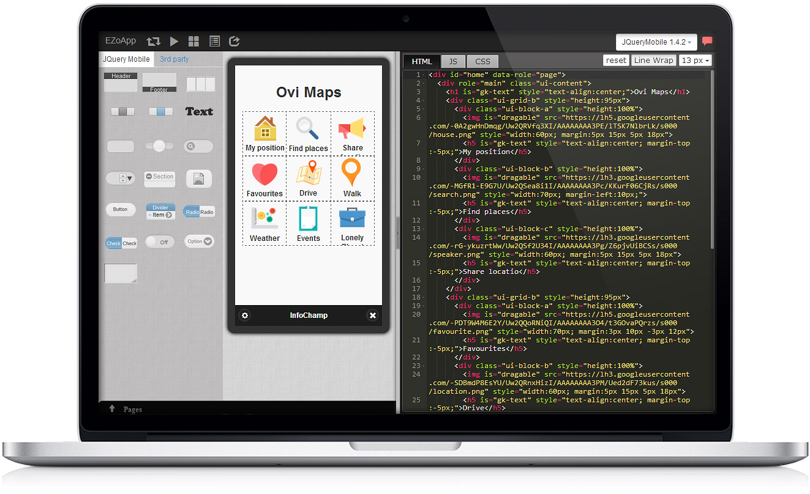

EZoApp 是最佳的行動設計工具
行動應用不比桌上電腦，先天螢幕小、頻寬有限。行動應用的 UI 設計需符合操作便利、清楚簡單。 透過視覺化元件設計工具，可支援您 UI 設計的意念，隨心所欲的複製、移動元件位置，調整屬性效果。 使您的設計思維得以延續，創造出令人激賞的 UI 設計，彈指之間就可完成。
EZoApp 直覺式的拖放設計工具，可提供訪談人員完成高互動的雛型畫面。 可同步推播至行動裝置上看效果，讓用戶及早體驗操作、確認 App 畫面需求。 用 EZoApp 打造的不只是 UI 畫面，更是一個能立即體驗、立即互動的雛型。
